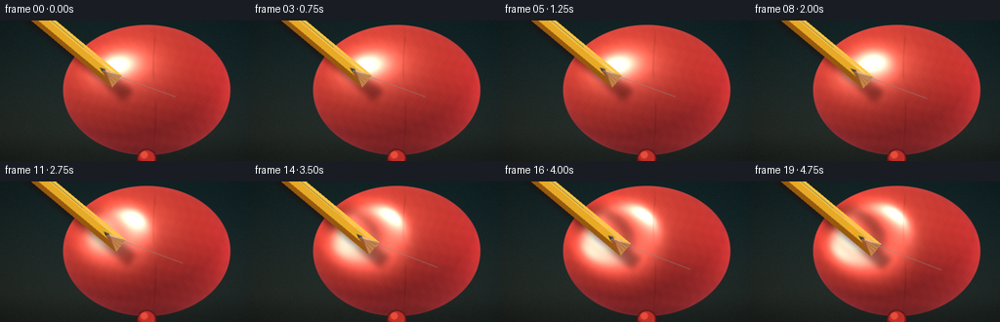
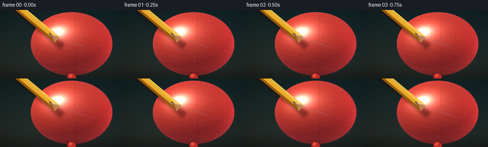
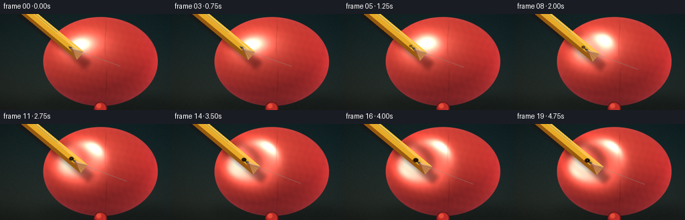

CODING AGENTS AS PIXEL WORLD MODELS
traex/DeepSeek-V4.1-Flash · phygen_025
点击播放 · 原生 RGB 像素
逐轮保存的候选
回放视频、检查图与代码变化。
每份候选均可单独播放。实际图片检查记录在下方工具轨迹中。
候选 01播放与检查图
点击播放 · 原生 RGB 像素


展开代码变化
--- 上一保存版本
+++ 本次保存版本
@@ -0,0 +1,274 @@
+"""Procedural close-up of a pencil slowly pressing into a latex balloon."""
+
+from pathlib import Path
+
+import numpy as np
+from PIL import Image, ImageDraw, ImageFilter
+
+from artifact_io import save
+
+
+ROOT = Path(__file__).resolve().parent
+WIDTH, HEIGHT = 256, 144
+FRAMES, FPS = 20, 4.0
+SS = 2 # Render at 2x and downsample for clean edges.
+W, H = WIDTH * SS, HEIGHT * SS
+
+
+def smoothstep(edge0, edge1, x):
+ t = np.clip((x - edge0) / (edge1 - edge0), 0.0, 1.0)
+ return t * t * (3.0 - 2.0 * t)
+
+
+def unit(v):
+ return v / np.linalg.norm(v)
+
+
+def background():
+ yy, xx = np.mgrid[:H, :W].astype(np.float32)
+ x = xx / W
+ y = yy / H
+
+ # A muted blue-green studio sweep. The subtle warm/cool split separates
+ # the coral rubber from the background without looking like a flat card.
+ top = np.array([23.0, 42.0, 45.0], dtype=np.float32)
+ bottom = np.array([42.0, 51.0, 48.0], dtype=np.float32)
+ mix = smoothstep(0.0, 1.0, y)
+ image = top[None, None, :] * (1.0 - mix[..., None]) + bottom[None, None, :] * mix[..., None]
+ image += np.array([4.0, 0.5, -2.0])[None, None, :] * (1.0 - x[..., None])
+
+ # Soft table/backdrop transition and a restrained vignette.
+ table = smoothstep(0.76, 1.0, y)
+ image = image * (1.0 - 0.18 * table[..., None])
+ dx = (x - 0.52) / 0.68
+ dy = (y - 0.47) / 0.72
+ vignette = np.clip(1.0 - 0.26 * (dx * dx + dy * dy), 0.62, 1.0)
+ image *= vignette[..., None]
+
+ rng = np.random.default_rng(11)
+ grain = rng.normal(0.0, 1.0, (H, W, 1)).astype(np.float32)
+ image += grain * 1.7
+ return image
+
+
+def render_balloon(frame_index):
+ """Render the inflated latex body and its local pressure dimple."""
+ yy, xx = np.mgrid[:H, :W].astype(np.float32)
+ cx, cy = 150.0 * SS, 71.0 * SS
+ rx, ry, rz = 86.0 * SS, 67.0 * SS, 65.0 * SS
+ nx = (xx - cx) / rx
+ ny = (yy - cy) / ry
+ radial = nx * nx + ny * ny
+ inside = radial <= 1.0
+ z = rz * np.sqrt(np.clip(1.0 - radial, 0.0, 1.0))
+
+ # Motion: a short approach, a visible dimple, then a gradual puncture.
+ contact_frame = 5.0
+ press = float(np.clip((frame_index - contact_frame) / 13.0, 0.0, 1.0))
+ press = press * press * (3.0 - 2.0 * press)
+ screen_shift = 12.0 * SS * press
+ direction = unit(np.array([0.77, 0.64], dtype=np.float32))
+ contact = np.array([102.0 * SS, 48.0 * SS], dtype=np.float32)
+ dent_center = contact + direction * (0.66 * screen_shift)
+
+ dx = (xx - dent_center[0]) / SS
+ dy = (yy - dent_center[1]) / SS
+ along = dx * direction[0] + dy * direction[1]
+ across = -dx * direction[1] + dy * direction[0]
+ dent_radius = (17.0 + 6.0 * press) * SS
+ elongated = (along / (1.34 * dent_radius)) ** 2 + (across / dent_radius) ** 2
+ envelope = np.exp(-1.8 * elongated) * smoothstep(0.0, 0.18, press)
+ depth = (20.0 * SS) * press
+ z = z - depth * envelope
+
+ # A shallow secondary bulge at the rim makes the rubber look stretched,
+ # not simply carved out.
+ ring = np.exp(-((np.sqrt(np.maximum(elongated, 0.0)) - 1.15) / 0.30) ** 2)
+ z = z + 1.5 * SS * press * ring
+
+ eps = 1.0
+ dzdx = (np.roll(z, -1, axis=1) - np.roll(z, 1, axis=1)) / (2.0 * eps)
+ dzdy = (np.roll(z, -1, axis=0) - np.roll(z, 1, axis=0)) / (2.0 * eps)
+ normal = np.dstack((-dzdx, -dzdy, np.ones_like(z)))
+ normal /= np.maximum(np.linalg.norm(normal, axis=2, keepdims=True), 1e-5)
+
+ light = unit(np.array([-0.50, -0.68, 0.56], dtype=np.float32))
+ rim_light = unit(np.array([0.78, -0.05, 0.30], dtype=np.float32))
+ view = np.array([0.0, 0.0, 1.0], dtype=np.float32)
+
+ diffuse = np.clip(normal @ light, 0.0, 1.0)
+ rim = np.clip(normal @ rim_light, 0.0, 1.0) ** 3
+ half = unit(light + view)
+ spec = np.clip(normal @ half, 0.0, 1.0) ** 54
+ broad_spec = np.clip(normal @ half, 0.0, 1.0) ** 11
+ fresnel = (1.0 - np.clip(normal[..., 2], 0.0, 1.0)) ** 2.1
+
+ base = np.array([211.0, 67.0, 53.0], dtype=np.float32)
+ shadow = np.array([101.0, 29.0, 34.0], dtype=np.float32)
+ color = shadow[None, None, :] + (base - shadow)[None, None, :] * (0.20 + 0.80 * diffuse[..., None])
+ color += np.array([74.0, 15.0, 12.0])[None, None, :] * rim[..., None]
+ color += np.array([255.0, 192.0, 160.0])[None, None, :] * (0.34 * broad_spec[..., None])
+ color += np.array([255.0, 235.0, 216.0])[None, None, :] * (0.84 * spec[..., None])
+ color += np.array([34.0, 19.0, 24.0])[None, None, :] * fresnel[..., None]
+
+ # Latex micro-texture and a few faint mold seams.
+ fine = (
+ np.sin(xx * 0.31 + np.sin(yy * 0.073) * 2.3)
+ + np.sin(yy * 0.27 - xx * 0.061)
+ + 0.55 * np.sin((xx + yy) * 0.53)
+ )
+ color += fine[..., None] * np.array([1.6, 0.55, 0.45])[None, None, :]
+ seam_x = cx + 8.0 * SS + 1.2 * SS * np.sin((yy - cy) / (15.0 * SS))
+ seam = np.exp(-((xx - seam_x) / (0.85 * SS)) ** 2)
+ seam *= smoothstep(0.05, 0.3, np.abs(ny)) * (1.0 - smoothstep(0.70, 1.0, np.abs(ny)))
+ color *= (1.0 - 0.10 * seam[..., None])
+
+ # The membrane gets slightly darker around the puncture and at the
+ # bottom occlusion edge. A tiny lit lip gives the rubber visible thickness.
+ local_radial = np.sqrt(np.maximum(elongated, 0.0))
+ crease = np.exp(-((local_radial - 0.42) / 0.20) ** 2) * press
+ color *= (1.0 - 0.30 * crease[..., None])
+ lip = np.exp(-((local_radial - 0.70) / 0.18) ** 2) * press
+ color += lip[..., None] * np.array([28.0, 4.0, 3.0])[None, None, :]
+ lower_edge = smoothstep(0.78, 1.0, ny) * inside
+ color *= (1.0 - 0.20 * lower_edge[..., None])
+
+ alpha = smoothstep(1.002, 0.982, radial)
+ color = np.clip(color, 0.0, 255.0)
+ return color, alpha, press, contact + direction * screen_shift, direction
+
+
+def polygon(draw, points, fill):
+ draw.polygon([(float(x), float(y)) for x, y in points], fill=fill)
+
+
+def add_pencil(image, tip, direction, press):
+ """Composite a hexagonal yellow pencil, sharpened wood, and graphite."""
+ rgba = Image.fromarray(np.clip(image, 0, 255).astype(np.uint8)).convert("RGBA")
+ overlay = Image.new("RGBA", (W, H), (0, 0, 0, 0))
+ draw = ImageDraw.Draw(overlay)
+
+ d = np.asarray(direction, dtype=np.float32)
+ n = np.array([-d[1], d[0]], dtype=np.float32)
+ tip = np.asarray(tip, dtype=np.float32)
+
+ def p(t, s):
+ q = tip + d * t + n * s
+ return tuple(q)
+
+ # Pencil shaft. The narrow central facet catches the same upper-left light.
+ shaft_end = 23.0 * SS
+ far = -330.0 * SS
+ half = 8.1 * SS
+ polygon(draw, [p(far, -half), p(shaft_end, -half), p(shaft_end, half), p(far, half)], (218, 156, 35, 255))
+ polygon(draw, [p(far, -half), p(shaft_end, -half), p(shaft_end, -0.42 * half), p(far, -0.42 * half)], (248, 196, 67, 255))
+ polygon(draw, [p(far, 0.38 * half), p(shaft_end, 0.38 * half), p(shaft_end, half), p(far, half)], (151, 91, 19, 255))
+ polygon(draw, [p(far, -0.43 * half), p(shaft_end, -0.43 * half), p(shaft_end, 0.37 * half), p(far, 0.37 * half)], (228, 169, 43, 255))
+
+ # A soft reflected line along the bright facet.
+ draw.line([p(far, -0.64 * half), p(shaft_end, -0.64 * half)], fill=(255, 225, 126, 150), width=max(1, SS))
+
+ # Sharpened wood cone, split into light and shadow facets.
+ wood_start = shaft_end
+ wood_end = 5.0 * SS
+ polygon(draw, [p(wood_start, -half), p(wood_start, half), p(wood_end, 0.20 * half)], (195, 133, 76, 255))
+ polygon(draw, [p(wood_start, -half), p(wood_end, 0.20 * half), p(wood_end, -0.24 * half)], (233, 180, 121, 255))
+ polygon(draw, [p(wood_start, half), p(wood_end, 0.20 * half), p(wood_end, -0.24 * half)], (151, 89, 51, 255))
+ # Wood grain.
+ for offset in (-0.55, -0.12, 0.36):
+ draw.line([p(wood_start - 0.5 * SS, offset * half), p(wood_end + 4.0 * SS, offset * 0.17 * half)],
+ fill=(111, 61, 37, 75), width=max(1, SS // 2))
+
+ # Graphite cone. At full insertion the final few pixels sit in the dark
+ # puncture, while the point remains visible to make the action unambiguous.
+ graphite_end = tip
+ polygon(draw, [p(wood_end, -0.24 * half), p(wood_end, 0.20 * half), graphite_end], (48, 48, 49, 255))
+ polygon(draw, [p(wood_end, -0.24 * half), graphite_end, p(wood_end + 1.5 * SS, -0.055 * half)], (88, 87, 84, 255))
+ draw.line([p(wood_end - 0.5 * SS, 0.08 * half), p(graphite_end + d * -2.0 * SS, n * 0.008 * half)],
+ fill=(139, 137, 130, 175), width=max(1, SS))
+
+ # Pencil shadow on the balloon, offset down-right from the shaft.
+ shadow = Image.new("L", (W, H), 0)
+ shadow_draw = ImageDraw.Draw(shadow)
+ shadow_offset = np.array([7.0 * SS, 11.0 * SS], dtype=np.float32)
+ sh_tip = tip + shadow_offset
+ sh_d = d
+ sh_n = n
+ sh_half = 7.4 * SS
+ shadow_draw.polygon([
+ tuple(sh_tip + sh_d * far + sh_n * sh_half),
+ tuple(sh_tip + sh_d * (shaft_end + 6 * SS) + sh_n * sh_half),
+ tuple(sh_tip + sh_d * (shaft_end + 6 * SS) - sh_n * sh_half),
+ tuple(sh_tip + sh_d * far - sh_n * sh_half),
+ ], fill=112)
+ shadow = shadow.filter(ImageFilter.GaussianBlur(3.0 * SS))
+ shade = Image.new("RGBA", (W, H), (40, 8, 8, 0))
+ shade.putalpha(shadow)
+ rgba = Image.alpha_composite(rgba, shade)
+
+ # Graphite contact smudge and the dark opening at the puncture.
+ contact = tip - d * (1.0 * SS)
+ smear = Image.new("RGBA", (W, H), (0, 0, 0, 0))
+ smd = ImageDraw.Draw(smear)
+ sx, sy = contact
+ smd.ellipse((sx - 5.5 * SS, sy - 4.0 * SS, sx + 5.0 * SS, sy + 4.5 * SS),
+ fill=(39, 18, 20, int(45 + 75 * press)))
+ smear = smear.filter(ImageFilter.GaussianBlur(2.2 * SS))
+ rgba = Image.alpha_composite(rgba, smear)
+
+ rgba = Image.alpha_composite(rgba, overlay)
+ return np.asarray(rgba.convert("RGB"), dtype=np.float32)
+
+
+def add_knot(image):
+ """A compact latex neck and knot anchor the balloon at lower center."""
+ layer = Image.new("RGBA", (W, H), (0, 0, 0, 0))
+ d = ImageDraw.Draw(layer)
+ cx = 150 * SS
+ # Neck shadow, neck, and the small tied tab.
+ d.ellipse((cx - 10 * SS, 132 * SS, cx + 10 * SS, 151 * SS), fill=(113, 29, 32, 255))
+ d.ellipse((cx - 8 * SS, 133 * SS, cx + 8 * SS, 148 * SS), fill=(188, 49, 43, 255))
+ d.polygon([(cx - 7 * SS, 142 * SS), (cx - 11 * SS, 151 * SS), (cx - 2 * SS, 147 * SS)],
+ fill=(157, 35, 36, 255))
+ d.polygon([(cx + 7 * SS, 142 * SS), (cx + 11 * SS, 150 * SS), (cx + 2 * SS, 147 * SS)],
+ fill=(201, 57, 47, 255))
+ d.ellipse((cx - 6 * SS, 134 * SS, cx + 1 * SS, 141 * SS), fill=(228, 79, 60, 255))
+ layer = layer.filter(ImageFilter.GaussianBlur(0.35 * SS))
+ return Image.alpha_composite(Image.fromarray(np.clip(image, 0, 255).astype(np.uint8)).convert("RGBA"), layer)
+
+
+def render_frame(frame_index):
+ bg = background()
+ balloon, alpha, press, tip, direction = render_balloon(frame_index)
+ image = bg * (1.0 - alpha[..., None]) + balloon * alpha[..., None]
+ image = add_pencil(image, tip, direction, press)
+
+ # A few very soft contact highlights around the dimple reinforce the
+ # impression of stretched latex without obscuring the puncture.
+ yy, xx = np.mgrid[:H, :W].astype(np.float32)
+ dx = (xx - tip[0]) / SS
+ dy = (yy - tip[1]) / SS
+ dist = np.sqrt(dx * dx + dy * dy)
+ halo = np.exp(-((dist - 10.5) / 4.0) ** 2) * press
+ image += halo[..., None] * np.array([8.0, 1.0, 0.7])[None, None, :]
+
+ result = add_knot(image).convert("RGB")
+ result = result.filter(ImageFilter.GaussianBlur(0.25 * SS))
+ result = result.resize((WIDTH, HEIGHT), Image.Resampling.LANCZOS)
+ arr = np.asarray(result, dtype=np.float32)
+
+ # Finished-frame treatment: gentle contrast and a whisper of film grain.
+ arr = (arr - 128.0) * 1.035 + 128.0
+ rng = np.random.default_rng(100 + frame_index)
+ arr += rng.normal(0.0, 0.65, arr.shape)
+ return np.clip(arr, 0, 255).astype(np.uint8)
+
+
+def main():
+ frames = np.stack([render_frame(i) for i in range(FRAMES)])
+ save(frames, ROOT)
+ print(f"Saved {FRAMES} frames to {ROOT}")
+
+
+if __name__ == "__main__":
+ main()
候选 02播放与检查图
点击播放 · 原生 RGB 像素

展开代码变化
--- 上一保存版本
+++ 本次保存版本
@@ -44,6 +44,14 @@
dy = (y - 0.47) / 0.72
vignette = np.clip(1.0 - 0.26 * (dx * dx + dy * dy), 0.62, 1.0)
image *= vignette[..., None]
+
+ # Soft cast shadow under the balloon gives the close-up a physical base.
+ shadow = Image.new("L", (W, H), 0)
+ shadow_draw = ImageDraw.Draw(shadow)
+ shadow_draw.ellipse((58 * SS, 116 * SS, 248 * SS, 145 * SS), fill=135)
+ shadow = shadow.filter(ImageFilter.GaussianBlur(7 * SS))
+ shadow_alpha = np.asarray(shadow, dtype=np.float32) / 255.0
+ image *= (1.0 - 0.26 * shadow_alpha[..., None])
rng = np.random.default_rng(11)
grain = rng.normal(0.0, 1.0, (H, W, 1)).astype(np.float32)
@@ -63,8 +71,8 @@
z = rz * np.sqrt(np.clip(1.0 - radial, 0.0, 1.0))
# Motion: a short approach, a visible dimple, then a gradual puncture.
- contact_frame = 5.0
- press = float(np.clip((frame_index - contact_frame) / 13.0, 0.0, 1.0))
+ contact_frame = 1.0
+ press = float(np.clip((frame_index - contact_frame) / 17.0, 0.0, 1.0))
press = press * press * (3.0 - 2.0 * press)
screen_shift = 12.0 * SS * press
direction = unit(np.array([0.77, 0.64], dtype=np.float32))
@@ -206,7 +214,7 @@
shade.putalpha(shadow)
rgba = Image.alpha_composite(rgba, shade)
- # Graphite contact smudge and the dark opening at the puncture.
+ # Graphite contact smudge beneath the point.
contact = tip - d * (1.0 * SS)
smear = Image.new("RGBA", (W, H), (0, 0, 0, 0))
smd = ImageDraw.Draw(smear)
@@ -217,6 +225,27 @@
rgba = Image.alpha_composite(rgba, smear)
rgba = Image.alpha_composite(rgba, overlay)
+
+ # Once the point has entered, a small rubber rim occludes the last few
+ # pixels of graphite. This is the key penetration cue in a side view.
+ if press > 0.08:
+ rim = Image.new("RGBA", (W, H), (0, 0, 0, 0))
+ rd = ImageDraw.Draw(rim)
+ opening = tip - d * (1.6 * SS)
+ ox, oy = opening
+ openness = smoothstep(0.08, 0.80, press)
+ rx = (2.3 + 1.4 * openness) * SS
+ ry = (1.7 + 1.2 * openness) * SS
+ rd.ellipse((ox - rx, oy - ry, ox + rx, oy + ry),
+ fill=(25, 5, 8, int(120 + 100 * openness)))
+ rd.ellipse((ox - rx * 0.56, oy - ry * 0.52, ox + rx * 0.56, oy + ry * 0.52),
+ fill=(6, 5, 6, int(150 + 90 * openness)))
+ # A tiny, cooler graphite glint keeps the point itself readable.
+ rd.ellipse((ox - 0.55 * SS, oy - 0.45 * SS, ox + 0.55 * SS, oy + 0.45 * SS),
+ fill=(83, 82, 80, int(110 + 100 * openness)))
+ rim = rim.filter(ImageFilter.GaussianBlur(0.22 * SS))
+ rgba = Image.alpha_composite(rgba, rim)
+
return np.asarray(rgba.convert("RGB"), dtype=np.float32)
可观测工具轨迹
实际执行的命令与返回图片。
命令 1exit 0
/bin/bash -c "pwd && rg --files -g 'GENERATION_RULES.md' -g 'task_spec.json' -g 'prompt.txt' -g '"'!node_modules'"'"
命令 2exit 0
/bin/bash -c 'git status --short && find . -maxdepth 2 -type f | sort | head -200'
命令 3exit 0
/bin/bash -c 'cat GENERATION_RULES.md'
命令 4exit 0
/bin/bash -c 'cat task_spec.json'
命令 5exit 0
/bin/bash -c 'cat prompt.txt'
命令 6exit 0
/bin/bash -c "sed -n '1,260p' artifact_io.py && sed -n '1,220p' player_template.html"
命令 7exit 0
/bin/bash -c "python - <<'PY'
import sys
import numpy, PIL
print(sys.version)
print('numpy', numpy.__version__)
print('PIL', PIL.__version__)
try:
import scipy; print('scipy', scipy.__version__)
except Exception as e: print('no scipy', e)
PY"命令 8exit 0
/bin/bash -c "python - <<'PY' from PIL import Image # no file; just check optional fonts available import glob for pat in ['/usr/share/fonts/truetype/**/*.ttf']: print(pat, len(glob.glob(pat, recursive=True))) PY"
命令 9exit 1
/bin/bash -c 'python generate.py'
命令 10exit 0
/bin/bash -c 'python generate.py'
命令 11exit 0
/bin/bash -c "python - <<'PY'
from PIL import Image
im=Image.open('inspection.png')
print(im.size)
im.resize((im.width*2, im.height*2), Image.Resampling.NEAREST).save('.tmp/inspection_2x.png')
PY
ls -lh task_spec.json pixels.npz index.html inspection.png transition_check.png frames/*.png | tail -8"命令 12exit 0
/bin/bash -c 'command -v chafa || command -v viu || command -v jp2 || command -v img2txt || true'
命令 13exit 0
/bin/bash -c "python - <<'PY'
from PIL import Image
import numpy as np
chars=' .:-=+*#%@'
for fi in [0,5,10,15,19]:
im=np.asarray(Image.open(f'frames/{fi:02d}.png').resize((96,54),Image.Resampling.BILINEAR)).astype(float)
r,g,b=im[...,0],im[...,1],im[...,2]
# classify by hue/value into readable symbols
out=np.full((54,96),' ',dtype='<U1')
dark=(r+g+b)<125
bg=(b>r*1.02)&(g>r*1.02)&~dark
balloon=(r>g*1.30)&(r>b*1.15)&~dark
yellow=(r>90)&(g>55)&(g>b*1.7)&(g>r*.42)&(g<r*.92)
# avoid overlap precedence
out[bg]='.'
out[balloon]='R'
out[yellow]='Y'
out[dark]='#'
# highlights in coral / pencil
lum=(r+g+b)/3
out[(balloon)&(lum>165)]='O'
out[(yellow)&(lum>180)]='y'
print('\\nFRAME',fi)
print('\\n'.join(''.join(row) for row in out))
PY"命令 14exit 0
/bin/bash -c "python - <<'PY'
from PIL import Image
import numpy as np
for fi in [0,4,8,12,16,19]:
im=np.asarray(Image.open(f'frames/{fi:02d}.png').resize((80,45),Image.Resampling.BILINEAR)).astype(float)
r,g,b=im[...,0],im[...,1],im[...,2]
out=np.full(r.shape,' ',dtype='<U1')
bg=(b>=r*0.9)&(g>=r*0.8)&(r<100)
bal=(r>g*1.45)&(r>b*1.3)&(r>55)
high=bal&(r>180)
yel=(r>70)&(g>40)&(g>b*1.55)&(g>r*.42)&(g<r*.92)
yhi=yel&(r>190)
wood=(r>g*1.15)&(g>b*1.35)&(r>65)&(r<190)&~bal
dark=(r+g+b<100)
out[bg]='.'
out[bal]='r'; out[high]='R'
out[wood]='w'; out[yel]='y'; out[yhi]='Y'
out[dark]='#'
print(f'\\n--- {fi:02d} ---')
for row in out: print(''.join(row))
PY"命令 15exit 0
/bin/bash -c "python - <<'PY'
from PIL import Image
import numpy as np
chars=' .:-=+*#%@'
for fi in [0,5,10,15,19]:
im=np.asarray(Image.open(f'frames/{fi:02d}.png').crop((65,22,150,95)).resize((85,73),Image.Resampling.NEAREST))
# luminance + hue marks
lum=im.mean(2)
r,g,b=im[...,0].astype(int),im[...,1].astype(int),im[...,2].astype(int)
s=''
for y in range(im.shape[0]):
row=''
for x in range(im.shape[1]):
v=lum[y,x]
if r[y,x]>g[y,x]*1.45 and r[y,x]>b[y,x]*1.3 and r[y,x]>70: ch=chars[min(9,int(v/26))]
elif r[y,x]>g[y,x]*1.05 and g[y,x]>b[y,x]*1.2 and r[y,x]>60: ch='w'
elif g[y,x]>b[y,x]*1.4 and r[y,x]>g[y,x]*1.2 and g[y,x]>40: ch='Y'
elif v<45: ch='@'
else: ch=' '
row+=ch
s+=row+'\\n'
print(f'--- {fi:02d} contact crop (x65-150 y22-95) ---')
print(s)
PY"命令 16exit 0
/bin/bash -c "python - <<'PY'
from PIL import Image
import numpy as np
for fi in [0,5,10,15,19]:
im=np.asarray(Image.open(f'frames/{fi:02d}.png')).astype(int)
r,g,b=im[...,0],im[...,1],im[...,2]
print(fi, 'mean', im.mean((0,1)).round(1), 'range', im.min(), im.max())
# report contact strip values and pixel colors around approximate tip
# estimated tip at (102,48) to (114,58)
for y in [46,49,52,55,58]:
print(' y',y, [(x, tuple(im[y,x])) for x in range(95,122,4)])
PY"命令 17exit 0
/bin/bash -c "python - <<'PY'
from PIL import Image
import numpy as np
for fi in [0,5,10,15,19]:
a=np.asarray(Image.open(f'frames/{fi:02d}.png')).astype(float)
lum=a.mean(2)
print(fi, 'white>245', (lum>245).mean()*100, 'bright>220',(lum>220).mean()*100,'dark<35',(lum<35).mean()*100, 'sat mean', (a.max(2)-a.min(2)).mean())
PY"命令 18exit 0
/bin/bash -c "python - <<'PY'
from PIL import Image
import numpy as np
for fi in [0,1,2,3,4,5,6,8,10,12,14,16,18,19]:
a=np.asarray(Image.open(f'frames/{fi:02d}.png')).astype(float)
print(fi, 'mean', a.mean((0,1)).round(2), 'tip-like dark count', ((a[:,:,0]<80)&(a[:,:,1]<80)&(a[:,:,2]<80)).sum())
PY"命令 19exit 0
/bin/bash -c "python - <<'PY'
from PIL import Image
import numpy as np
for fi in [0,5,10,15,19]:
a=np.asarray(Image.open(f'frames/{fi:02d}.png')).astype(int)
# sample brightest pencil pixels positions
r,g,b=a[...,0],a[...,1],a[...,2]
m=(r>245)&(g>170)&(b<140)
ys,xs=np.where(m)
print(fi, 'yellow white count',len(xs), 'x',xs.min() if len(xs) else None,xs.max() if len(xs) else None,'y',ys.min() if len(xs) else None,ys.max() if len(xs) else None)
PY"命令 20exit 0
/bin/bash -c "python - <<'PY'
from PIL import Image
import numpy as np
for fi in [0,5,10,15,19]:
a=np.asarray(Image.open(f'frames/{fi:02d}.png')).astype(int)
r,g,b=a[...,0],a[...,1],a[...,2]
yel=(r>150)&(g>90)&(g>b*1.6)&(g>r*.5)&(g<r*.94)
print(fi, 'yellow', yel.sum())
PY"命令 21exit 0
/bin/bash -c 'python generate.py'
命令 22exit 0
/bin/bash -c "python - <<'PY'
from PIL import Image
import numpy as np
# concise visual QA: crop tip region and print a color-coded high-resolution contact map
for fi in [0,4,8,12,16,19]:
a=np.asarray(Image.open(f'frames/{fi:02d}.png')).astype(int)
print('\\nFRAME',fi,'mean',a.mean((0,1)).round(1),'max',a.max((0,1)))
# sample core around estimated tip: x 100-125, y 44-64
for y in range(44,65,2):
row=''
for x in range(98,129,2):
r,g,b=a[y,x]
if r>170 and g>100 and b<120: c='Y' # pencil
elif r<50 and g<50 and b<55: c='#' # graphite/opening
elif r>g*1.35 and r>b*1.25: c='r' # coral
elif r>150 and g>100 and b>100: c='w' # wood/glint
else: c='.'
row+=c
print(row)
PY"命令 23exit 0
/bin/bash -c "python - <<'PY'
from pathlib import Path
import json
import numpy as np
from PIL import Image
spec=json.loads(Path('task_spec.json').read_text())
z=np.load('pixels.npz')['pixels']
print('pixels', z.shape, z.dtype, 'spec', spec['width'], spec['height'], spec['frames'], spec['fps'])
frames=np.stack([np.asarray(Image.open(p).convert('RGB')) for p in sorted(Path('frames').glob('*.png'))])
print('png frames', frames.shape, frames.dtype, 'nonblank', bool(frames.min() < frames.max()))
diffs=np.abs(np.diff(frames.astype(np.int16),axis=0)).mean((1,2,3))
print('mean consecutive diffs', np.round(diffs,2).tolist())
print('changed pixels/frame', [(frames[i]"'!=frames[i-1]).any(2).sum() for i in range(1,len(frames))])
print('"'all artifacts', all(Path(p).exists() for p in ['generate.py','pixels.npz','index.html','inspection.png','transition_check.png']))
PY"命令 24exit 0
/bin/bash -c "python - <<'PY'
from pathlib import Path
import json,re,base64
html=Path('index.html').read_text()
m=re.search(r'const DATA=(\\{.*?\\}),W=DATA',html,re.S)
assert m, 'embedded data not found'
data=json.loads(m.group(1))
print('player',data['width'],data['height'],data['frames'],data['fps'],'deltas',len(data['deltas']),'caption chars',len(data['caption']))
raw=base64.b64decode(data['first'])
print('first payload bytes',len(raw),'expected',data['width']*data['height']*4)
assert len(raw)==data['width']*data['height']*4
print('player payload valid')
PY
python -m py_compile generate.py"命令 25exit 0
/bin/bash -c 'git status --short -- . && du -sh . && find frames -type f | wc -l'
保存候选 2 份；完成命令 25 次；可验证图片返回 0 张。原始 API 响应与完整日志保留在本地。